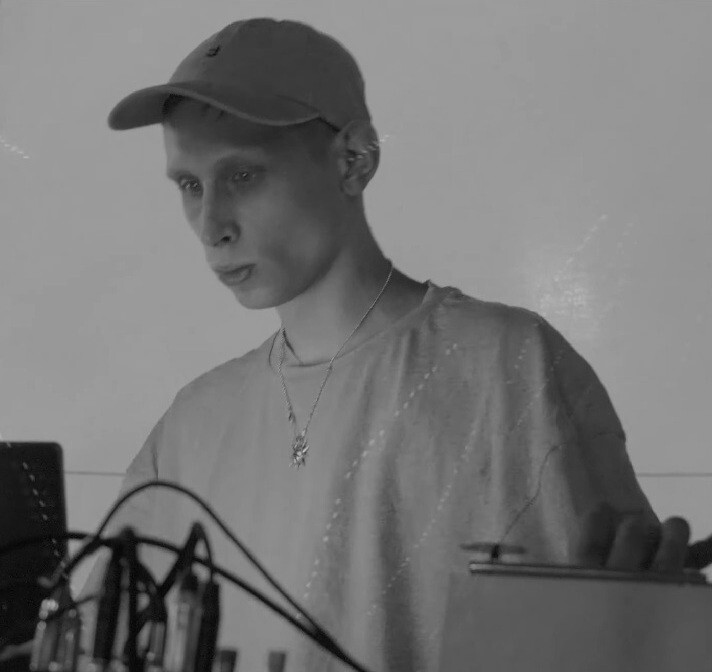

klad mineralov @ Rhythms & Patterns festival (Almaty, Panfilova street) / 2025

Rhythms & Patterns festival took place for the first time in August 2025 at 101 Dump Gallery and extended beyond its walls, integrating into the urban space. The festival featured an exhibition of technological objects, installations, and digital works, two days of sound and audiovisual performances in a concert format, and a display of digital works on a large faсade screen in the center of Almaty.
klad mineralov performed on the first day of the festival program in the very heart of Almaty — on Panfilov Street. The performance included work with algorithms in plugdata environment and improvisation with a DIY electroacoustic instrument.
featuring live generative visuals by Kirill Khabituev
Performed August 16, 2025. Panfilova street, Almaty